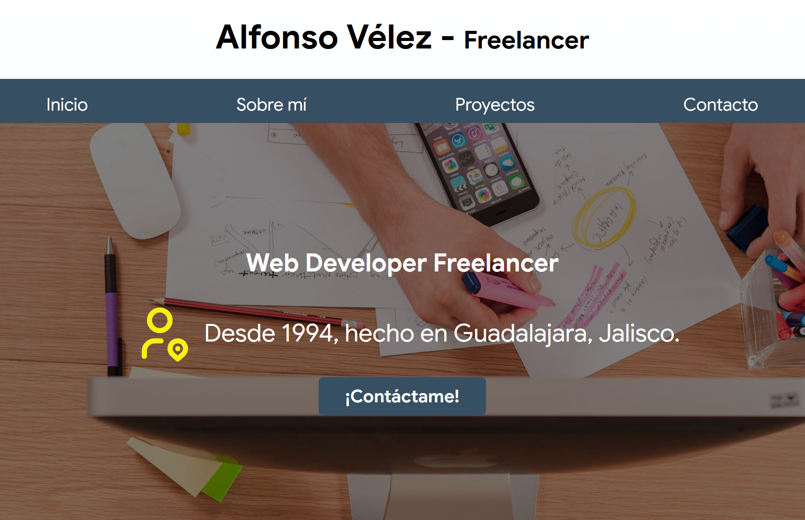
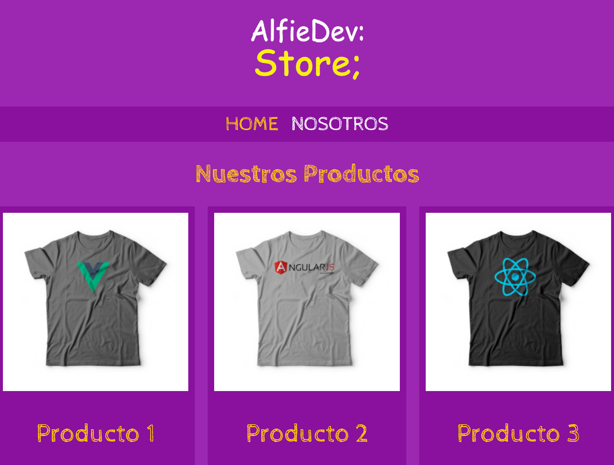
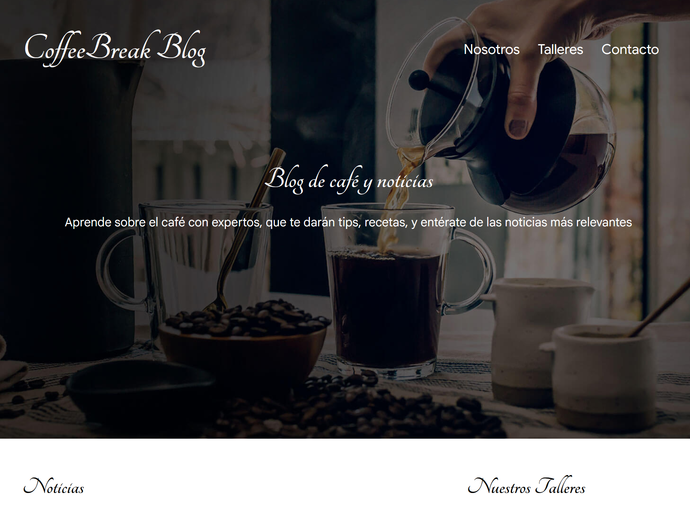
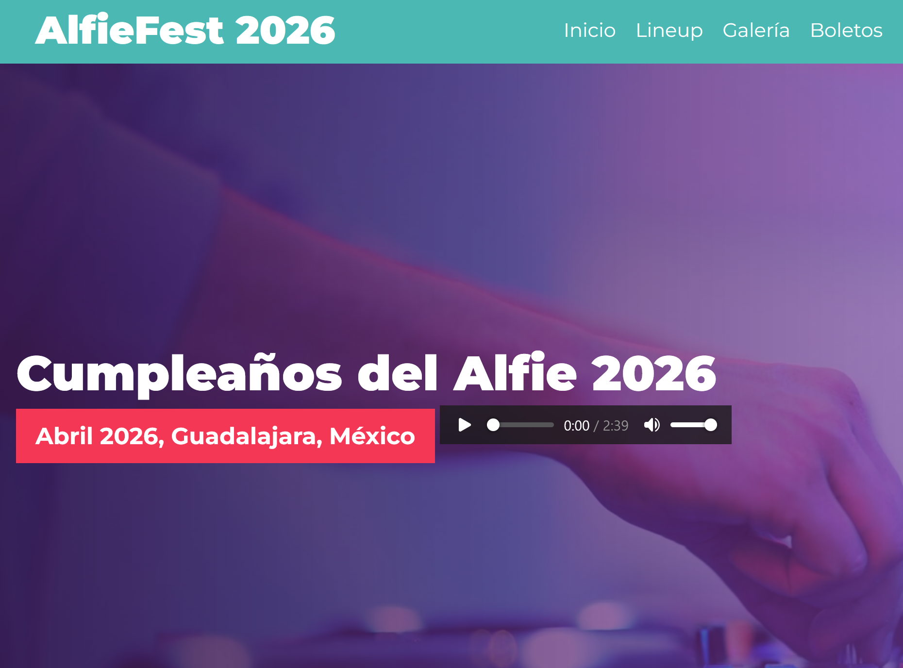
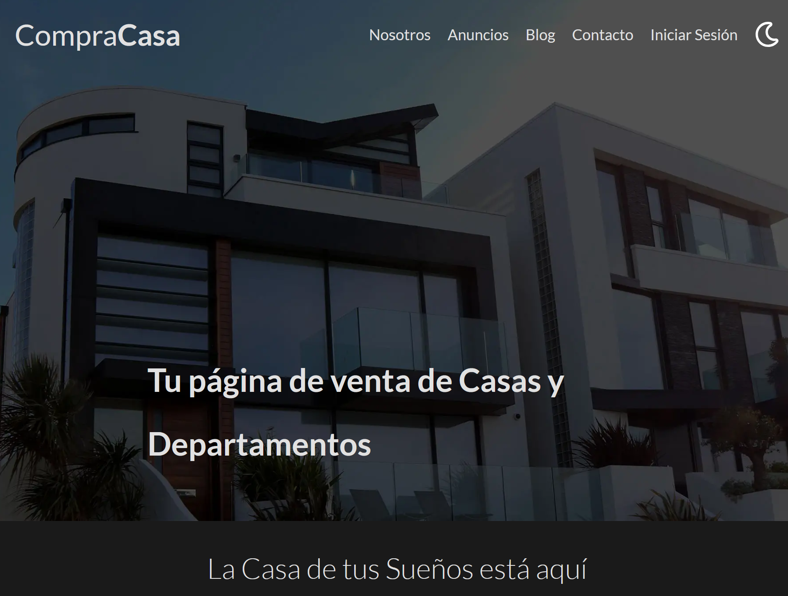

Proyectos

Piedra Angular
Descripción
Es esta misma página, la cual he ido actualizando para convertirla en mi tarjeta de presentación, mi portafolio, para que puedan ver mis proyectos, mis habilidades, mi experiencia, etcétera.


Portal UNAG
Descripción
Es la página principal de la Universidad Antropológica de Guadalajara. Durante el tiempo que trabajé para la Universidad, además de darle mantenimiento a la página, modificando información de los programas de la universidad en la base de datos y cambiando imágenes, también desarrollé nuevas secciones dentro de ella, como la publicación de su revista "Pilares", un directorio de los administrativos principales para que los alumnos supieran a quién acudir, landing pages nuevas para sus nuevas licenciaturas, maestrías y doctorados, modificaciones al maquetado de la página acorde a recomendaciones del departamento de marketing y comunicación, funciones para el posicionamiento de la página en Google (SEO), además de accesos directos a distintas plataformas educativas internas.
Así mismo, una vez al año, en diciembre, colocaba música navideña y un efecto de copos de nieve cayendo en toda la página. Me gustaba poder crear un entorno amigable para el alumno.



AlfieDevStore
Descripción
Es una plataforma básica de venta, en este caso, de ropa, sólo contiene la lógica de frontend, no está conectada a una base de datos real ni a ningún servicio de pago.

CoffeeBreakBlog
Descripción
Es una página web de blog de café, la cual, además de la sección de blog, y noticias, también tiene una sección para inscribirse a talleres ficticios de café y una sección de contacto con un formulario para inscribirse en dichos talleres.

AlfieFest2026
Descripción
Es una página web de un festival de música falso, con motivo de mi cumpleaños.
Esta página ya contiene desplazamiento dentro de la misma usando javascript, que también fue utilizado para añadir, cambiar o eliminar de forma dinámica imágenes dentro de la galería interactiva. Seleccionando una imagen, se muestra una versión de mayor tamaño de la misma y se incorpora un botón de cerrar. El diseño de la misma ya fue realizado usando SASS, y en el "hero" de la página se ha insertado un video de fondo y un pequeño reproductor para activar o desactivar una canción dentro de la página.


CompraCasa
Descripción
Es una plataforma de venta de casas, que pretende ser mucho más completa que la de ropa, tiene una sección principal con publicaciones destacadas, otra para una breve descripción de la hipotética empresa que vende las casas, otra con todos los anuncios, una más con publicaciones tipo blog, que puede ser utilizada para dar consejos para hacer una mejor compra o de diseños de casas, y por último, una sección de contacto con formulario para que los usuarios se pongan en contacto con la empresa, además incorporando un botón de "modo oscuro" para cambiar el tema de fondo de la página hecho con javascript, con el que también incorporé un "menú de hamburguesa", para hacerla más responsiva en dispositivos móviles.
Es un proyecto que aún está en desarrollo, ya que este permitirá la administración de las publicaciones y de las entradas en el blog, usando PHP y SQL, incluso apunto a que ya tenga una plataforma de venta experimental y que además sea adaptable también para otro tipo de bienes, no sólo casas, sino también, por ejemplo, automóviles.
Proyectos a futuro:
- "QuénLoQuele?": Una página para administrar una barbería, con sistema de citas y gestión de clientes.
- "Mission Control": Un administrador de proyectos y tareas, ambientado en el clásico juego "Metal Slug"
- "CompraAuto" (Nombre por definir): Adaptar el proyecto "CompraCasa" para la venta de automóviles.
- "Portal UNAG 2.0": Me quedaron ideas que no pude materializar cuando trabajaba en UNAG, es posible que en un futuro me quite la espinita y lo realice, todo depende de qué tanto tiempo libre tenga en un futuro...